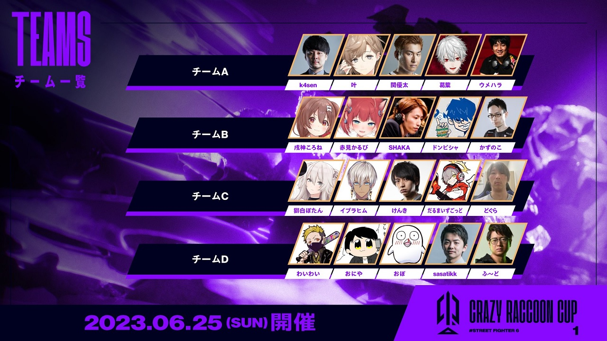

CR CUP
大会詳細
2024 2/15 現在までの間に計3回行われている。
CR所属のプロゲーマを始めに各ジャンルの有名プレイヤーやストリーマーなどを集め、
先鋒、次鋒、中堅、副将、大将の5人でチームを組み、大会の優勝を目指す。
大会形式
予選/決勝共通
- 先鋒、次鋒、中堅、副将、大将の1チーム制（星取り戦形式）
- 対戦チームの両代表者による大将挑戦権ありの計7ゲーム制
- 1ゲーム1ポイント、大将挑戦戦は3ポイント
- 対戦者は対戦中 チームメイトとの会話禁止
- バトル間で1分間チームメイトと会話可能
- 2ラウンド制/ゲーム時間99秒
予選
- 5人1組の4チーム総当たり戦
- 各ゲーム2本先取（Bo3）/ 大将挑戦戦は1本先取
- 総当たりの予選ポイント獲得数上位２チームが決勝
決勝
- 予選と同じく計7試合制
- 各ゲーム3本先取先(BO5)
第一回CRCUP出場メンバー
第二回CRCUP出場メンバー
第三回CRCUP出場メンバー

SFL
大会詳細
正式名称 : ストリートファイターリーグ
ストリートファイターのトッププレイヤーたちによるチーム制のリーグ戦イベント。
誰でも参加できて一番の腕前を決めるカプコンプロツアー・カプコンカップに対し、ストリートファイターリーグは招待制チーム戦で、
戦略的要素の強いルールも採用され、「観る」（より幅広い層に見せる）という側面も大きいイベント。
参加者数 : 9チーム37名
ストリートファイター6発売直後の2023年7月から、約半年間にわたり繰り広げられてきたストリートファイターリーグ: Pro-JP 2023は、FAV gamingチーム（sako / りゅうせい /
ときど / ボンちゃん）の優勝で幕を閉じました。
FAV gamingチームは2年ぶりの優勝、ストリートファイター6では初代王者に。
KZH CUP
大会詳細
正式名称 : KZHCUP in STREET FIGHTER 6
にじさんじ所属ライバー葛葉が主催するカジュアル大会企画
にじさんじに所属しているライバーを12名、
ストリートファイターのプロゲーマを4名で、計4チームのチーム対抗戦となっている。
大会形式
本戦
- 4チームによるポイント形式の総当たり戦
- ❶先鋒戦 ❷中堅戦 ❸PRO戦 ❹大将戦 の順で対戦
- 各試合2バトル先取(BO3)
- 1勝利につき1ポイント付与、大将戦のみ2ポイント付与
- 各マッチ獲得ポイント数の多いチームの勝利
- 勝利数の一番多いチームが優勝（勝利数が同じチームが複数いた場合は、総獲得ポイント数が多いチームを上位とする）
エキシビション
- 優勝チーム vs 主催チームのエキシビションマッチ
- 優勝チームは先鋒 → 中堅 → 大将 → PROの順、主催チームは助っ人(宇佐美リト)→ 葛葉の順に対戦する勝ち残り制(BO1)
- 優勝チームが勝利した場合、全チームにカプコンから「ストリートファイターTシャツ」をプレゼント